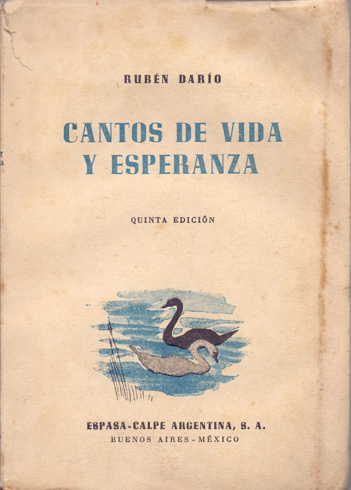
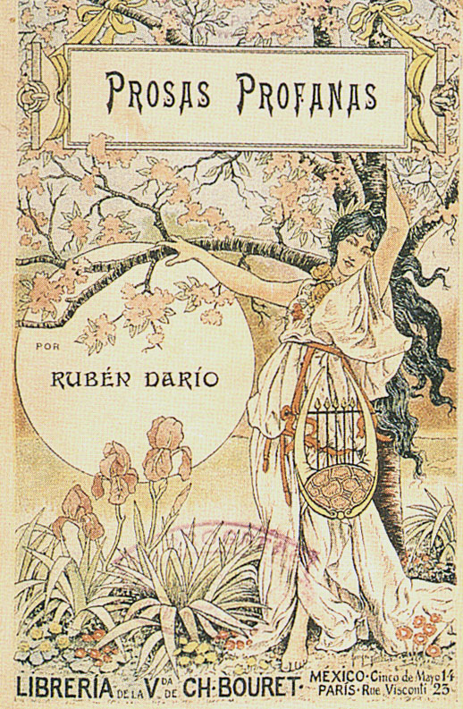

Entre libros y silencios, la poesía de Darío sigue guiando a quienes buscan entender la historia, la cultura y el espíritu de Nicaragua.

Obra clave del modernismo, marcada por la reflexión y la madurez poética.
Descargar PDF
Libro fundamental que consolidó el estilo modernista en lengua española.
Descargar PDF
Félix Rubén García Sarmiento nació en 1867 en Metapa, hoy Ciudad Darío, Nicaragua. Desde temprana edad mostró un talento excepcional para la poesía, lo que le permitió destacar rápidamente en el ámbito literario.
Es considerado el máximo representante del modernismo. Su obra renovó el lenguaje poético en español mediante una estética marcada por la musicalidad, el simbolismo y la perfección formal.